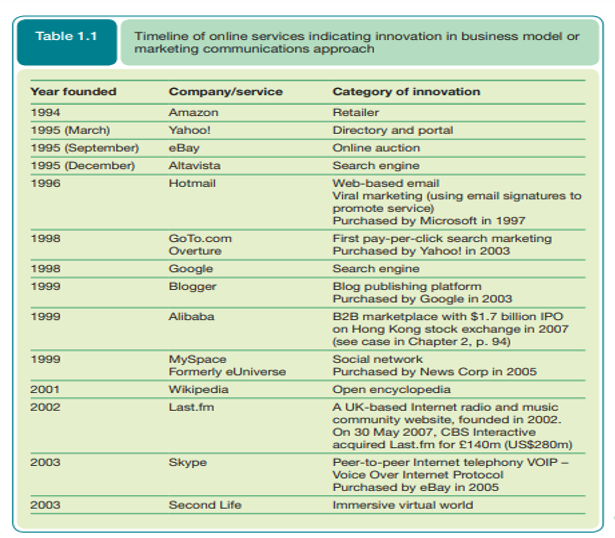
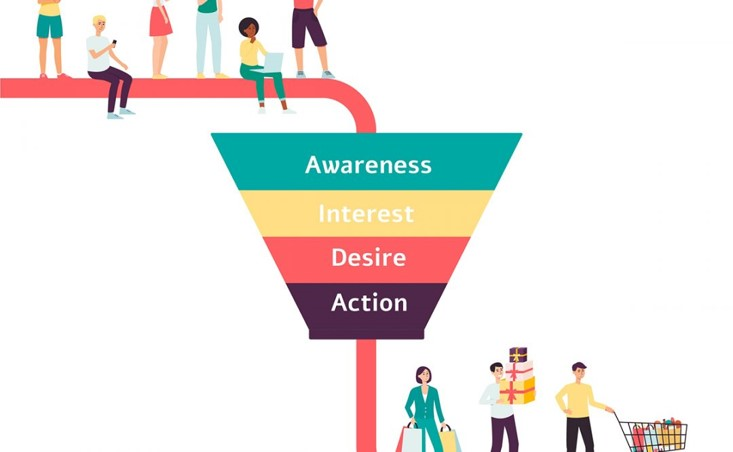

A Digital Marketing project
This is a personal project to document the digital marketing lectures and practice coding skills, Black color represent copied text from slides Red represent notes from my register and Green consist of examples, steps and additional resources
Introduction
Any form of marketing that is done via the use of the internet and electronic/digital platforms is called digital marketing. The primary purpose of internet marketing is to increase online sales of products and services by creating awareness among internet users.
Difference Between Digital Marketing and Internet Marketing
| Strategy | Digital Marketing | Internet marketing |
|---|---|---|
| Search engine optimization | Yes | Yes |
| Pay-per-click advertising | Yes | Yes |
| Email marketing | Yes | Yes |
| Social Media Marketing | Yes | Yes |
| Content Marketing | Yes | Yes |
| Social Media advertising | Yes | Yes |
| Web Design | Yes | Yes |
| TV ads | Yes | no |
| Digital Billboards | Yes | no |
| Radio spots | Yes | no |
| SMS texts | Yes | no |
Elements/Channels of Digital Marketing
Main elements of digital marketing are:
- Search Engine Optimization
- Search Engine Marketing
- Content Marketing
- Social media Marketing
- Email Marketing
- Affiliate Marketing
- Influencer Marketing
Why Go Digital?
Global Reach
Internet marketing provides businesses with a broad audience for their services or products. With the internet, all kinds of organizations, whether international or local, have access to millions of potential customers. Your ads are viewed by many customers through the advertising platforms that you use. The greater the number of users that view your ads, the higher the chances of making sales.
24/7 Marketing
Online marketing campaigns allow you to market your business at any time of the day without any restrictions. Moreover, the time variations in the different parts of the world will not affect your campaigns. Your target customers can visit your website or business page and post their queries about availing of your services without worrying about opening hours.
Cost-Effectiveness
This is one of the most appealing benefits of online marketing. You can save a lot of marketing cost while reaching a much bigger audience than you would reach using traditional channels alone.
Analytics and Optimization
By using different analytics tools, you can measures the result of digital marketing campaigns in real-time. This helps you devise a strategy as to how you can optimize future campaigns and fix any possible mistakes quickly.
Ease of Personalization
Internet marketing allows businesses to tailor their advertising campaigns to match the needs of their target audience. Businesses can also personalize communication between them and their clients. This makes certain that your service or product will reach your prospects in a timely fashion. Moreover, it strengthens the brand image and presence of the company.
Evolution of Digital Marketing

Why Digital Marketing Effors Fail?

Digital Marketing Strategy
Most companies, and even digital marketing agencies, do not develop a comprehensive digital marketing strategy before they delve into their marketing efforts. Instead, they quickly launch digital campaigns to see what works. Even if you know and use best practices, without an effective digital marketing strategy, you will only waste time and money.
Digital Marketing Funnel
Digital Marketing funnel is a strategic model that simplifies the customer journey and makes it easier for companies to follow. These solutions map out each stage of their client’s decision process and plan the steps they want to take in each.The biggest benefit of having a digital marketing funnel is its measurability. It shows you where you’re losing customers, and where you can improve your strategy.
Stages of Funnel
There are four main digital marketing funnel stages:
Stage 1 : Awareness: This is when a person first becomes aware of your business or website. This can occur through a wide variety of means including organic search, social media, word of mouth, email, press release, links from another website, and more.
Stage 2 : Discovery: During this phase, a visitor will start reading a few pages on your website, consume content, and learn more about your company and what you offer.
Stage 3 : Consideration: This is when your visitors will spend more time reading your site, consuming your media, and even joining your email list.
Stage 4 : Conversion: The conversion process can take some time, or it can be quick. This usually depends on what you’re selling, the price point, and how pressing of a problem your products and services solve.
Stages of Funnel
Additional Reading Material
3 Types of Modern Digital Marketing Funnels: If you are interested in building strong and effective digital marketing campaigns, you should know about the next 3 types:
- Hourglass Digital Marketing Funnel
- Looping Digital Marketing Funnel
- Micro-Moments Digital Marketing Funnel
Companies Following Excellent Digital Marketing Practices
ASOS
ASOS has been so successful because it knows its audience: millennials. And ASOS knows that 90.4% of millennials use social media, and that the average person spends just under two and a half hours per day browsing social channels. One of the brand’s best social media campaigns involved UGC (user generated content). ASOS asked its Instagram followers to share their favourite ASOS outfits online with the hashtag ‘#AsSeenOnMe’, with the opportunity of being featured on the ASOS social media channels in return.
Netflix
How does Netflix keep customers interested? It gets personal. Personalisation marketing is an effective way of cutting through the noise. In fact, 91% of consumers say that they're more willing to engage with businesses that provide offers directly to them. Not only does Netflix personalise to perfection, it doesn’t pressure its customers too much, either. By this, we mean Netflix doesn’t bombard subscribers with suggestions. It knows that online consumers are more likely to respond to one, relatable email rather than a bucket-load of non-specific content. As a digital marketer, you should always stagger your emails to get staggering results. Netflix sends highly personalised emails and push notifications that are easy to read, with a clear CTA (call to action) button – which usually just says ‘Play’. For example, as a Netflix customer, you’ll receive an email that recommends a film based on your previous choices, while addressing you by your first name.
Nike
In 2018, Nike partnered with Facebook Messenger’s chatbot platform, Snaps, in order to promote its Jordan brand. The bot’s purpose was to deliver content from the latest Jordan blog, newsletter, and website, to Nike’s Facebook followers via Messenger. Users could interact with the Jordan bot about the latest releases, and they could even customise the times they received notifications. This strategy was a huge success, with the brand claiming it saw open rates of 87%, which is enormous compared to the usual measly 21.33% open rate for emails for all industries.
Airbnb
Having built a huge community of renters and hosters – approximately 150 million active users – Airbnb is now one of the highest flying names in the travel industry. The key to Airbnb’s success has been through building trust, which has primarily be achieved through social influencer marketing. Airbnb has partnered with many famous names in order to generate a buzz and brand awareness. It even partnered with a celebrity dog, Marnie the Dog, to promote its dog-friendly properties.
Types of websites
Static Websites
Static sites are web pages that are pre-built and served to the user exactly as they were built, without any server-side processing or user-specific customization. Static sites are generated using simple HTML, CSS, and JavaScript files, which are served directly to the user's web browser.
A typical example of that would be this site. as it is used to provide information.
Dynamic Websites
Dynamic sites are web pages that are generated on the server-side in response to user requests, using server-side programming languages and databases. They allow for user-specific content and interactions, such as personalized recommendations and user authentication. Dynamic sites are often used for e-commerce and social media websites, but can be more complex to build and maintain than static sites.